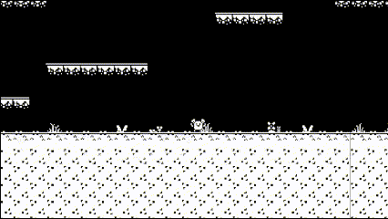
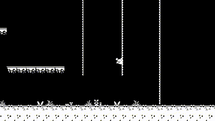

Since this is my first project in Unity I decided to follow a tutorial series: Link to Youtube playlist by Game Code Library which uses assets from 1-Bit Platformer Pack by Kenney.nl,
I decided to loosly follow this tutorial series to keep structure while learning the basics of Unity and help ease myself into Unity, but I also want to add features which are not in the tutorial such as dashing as a way to challenge myself.
The first steps were to learn how to add elements, and create a basic movement system. For the movement I decided to go with a dynamic jumping mechanic which lets the user either quickly tap space for a half height jump, or hold space for the full height jump.

after the basic mechanics were done I added double jumping and wall jumping.
double jumping was done by creating a second hitbox at the bottom of the character to detect if its overlapping with the ground to check if the character was currently grounded,
if they are grounded then reset jumpCount. jumpCount is set to 2 since I only want double jumps but this can be dynamically changed.
wallJump was done a simular way with a hitbox to detect the wall and if they are up aganist the wall and walking into it the user can wallSlide, and if the user is wallSliding then they can wallJump.
walljumping is basically the same as normal jumping but it launches the usder up and away from the wall.
all the animation assets are from the above listed youtube playlist.
